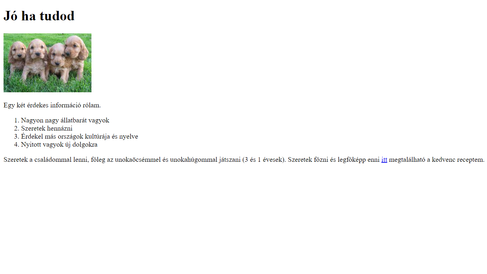
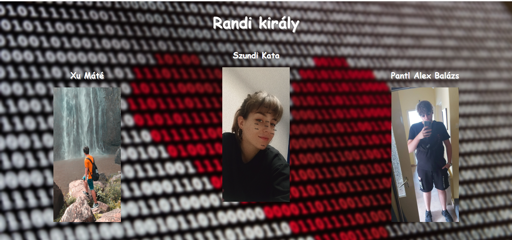
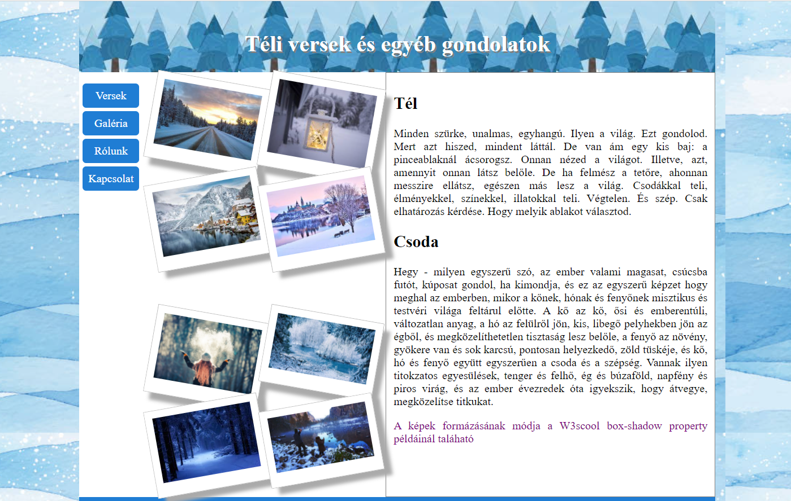

Webprogramozás órán tanultak
| Az első projektem | Csapatmunka | Téli versek |
|---|---|---|
|  |  |  |
| Az első projektemben az alapokat sajátítottam el és mutatkoztam be. | Közös munkával, osztálytársaimmal elkészítettünk egy Randi király nevű oldalt. | A Téli versek és egyéb gondolatok című weboldalban az addigi összes tudásom és képességem beleraktam. |
| Letöltés itt | Letöltés itt | Letöltés itt |